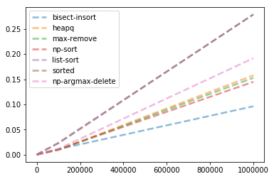

1. Introduction
This post belongs to a new series of posts where I intend to face the challenge of learning a new programming language, such as Python, by doing. In the first two posts (Part1 and Part2), we develop a Python code from scratch to determine the travelled distance of a bike rider in a given time span, for a fixed and increasing annual distance target. We started to play with some text processing tasks in Part3.
The new challenge aims at identifying the highest wages from a company employee’s salary list in Python. We have split this post into two sections. Part4 focuses on the function definition and the reference output, while this post tackles the implementation of other methods and the comparison in terms of computational performance.
2. Function development
For every function we define a second argument case to determine which kind of output is required out of largest (case==1), second largest (case==2) and n-th largest (case==3) cases.
The third attribute is pertaining to the option to remove duplicates in the input array.
The input is first reduced to a list of unique values if duplicates is true and then cleaned to get rid of None elements.
The first function uses the nlargest method from heapq module.
First we need to specify how many of the top largest items we want to retrieve (nlargest(4, xx) gives the first 4 largest items in x), and then we take the last one.
import heapq
def fun1(example, case=1, duplicates=False):
"""heapq"""
if duplicates:
example = list(set(example))
nn = 1 if case==1 else 2 if case==2 else 4
example = clean(example)
return heapq.nlargest(nn, clean(example))[-1]
print('The 4-th largest unique item in {} is: {}'.format(example, fun1(example, 3, duplicates=True)))
The 4-th largest unique item in [83, 'None', 107, 'None', 123, 46, 'None', 'None', 127, 75, 108, 51, 129, 'None', 126, 147, 97, 84, 112, 87, 41, 80, 119, 89, 65] is: 126
The second function takes the maximum item with Python max method to save it to maxVal.
If we look for n-th largest item where n>=2, we keep repeating the process of removing the current maximum value and search for the new maximum one more time.
This is carried out in a for-loop for n-1 times.
The final value of maxVal is then returned.
def fun2(example, case=1, duplicates=False):
"""max-remove"""
if duplicates:
example = list(set(example))
nn = 1 if case==1 else 2 if case==2 else 4
example = clean(example)
maxVal = max(example)
for _ in range(nn-1):
example.remove(maxVal)
maxVal = max(example)
return maxVal
print('The 4-th largest unique item is: {}'.format(fun2(example, 3, duplicates=True)))
The 4-th largest unique item is: 126
The third, fourth and fifth functions use the sort method from Numpy and native Python, respectively and Python sorted method.
The only point is that the Python sort works in-place, so the code gets a bit longer.
The final step is to retrieve the -n element since the list/array is sorted in an ascending fashion.
def fun3(example, case=1, duplicates=False):
"""np-sort"""
if duplicates:
example = list(set(example))
nn = 1 if case==1 else 2 if case==2 else 4
return np.sort(clean(example))[-nn]
print('The 4-th largest unique item is: {}'.format(fun3(example, 3, duplicates=True)))
The 4-th largest unique item is: 126
def fun4(example, case=1, duplicates=False):
"""list-sort"""
if duplicates:
example = list(set(example))
nn = 1 if case==1 else 2 if case==2 else 4
example = clean(example)
example.sort()
return example[-nn]
print('The 4-th largest unique item is: {}'.format(fun4(example, 3, duplicates=True)))
The 4-th largest unique item is: 126
def fun5(example, case=1, duplicates=False):
"""sorted"""
if duplicates:
example = list(set(example))
nn = 1 if case==1 else 2 if case==2 else 4
return sorted(clean(example))[-nn]
print('The 4-th largest unique item is: {}'.format(fun5(example, 3, duplicates=True)))
The 4-th largest unique item is: 126
The last function uses the same logic as the second one but by employing Numpy functionalities.
Since the delete function requires the array index to delete, we use argmax instead of max to access the array maximum location.
If we look for n-th largest item where n>=2, we keep repeating the process of removing the current maximum value and search for the new maximum one more time.
This is carried out in a for-loop for n-1 times.
The final index is then used to return the input item at that location.
def fun6(example, case=1, duplicates=False):
"""np-argmax-delete"""
if duplicates:
example = list(set(example))
nn = 1 if case==1 else 2 if case==2 else 4
example = clean(example)
index = np.argmax(example)
for _ in range(nn-1):
example = np.delete(example, index)
index = np.argmax(example)
return example[index]
print('The 4-th largest unique item is: {}'.format(fun6(example, 3, duplicates=True)))
The 4-th largest unique item is: 126
3. Function assessment
3.1 Process correctness
In this last section of this sorting task, we compare the performance of every developed function with the benchmark results, both in terms of process correctness and computational time. The process correctness is evaluated with a final score, which is the percentage of successful tests obtained with that function. As always, I do propose two methods to get the score, with and without list comprehension.
The computational time is first assessed with the %%time magic command available in Jupyter and then with a method available in the Python time library.
The second method is useful to store intermediate steps into an array for different input sizes and different developed functions.
Every time the results of the first reference function, refFun_largest, are compared to the ones obtained with the developed functions (in the following snippet, fun1 is used).
If they match, the score is increased by one unit.
At the end of the for loop, the score is divided by the length of the test samples and converted to a percentage.
Since the division is embedded into the assignment sign, /=, we need to place / in front of 100.
score = 0
for example, result in zip(testSet, testResults1):
if fun1(example) == result:
score += 1
score /= len(testSet)/100
print('Final score for function 1 is {}%.'.format(score))
Final score for function 1 is 100.0%.
Here a more compact version of the same process. The developed function returns the same results as the reference function did.
score = sum(1 for example, result in zip(testSet, testResults1) if fun1(example) == result)/len(testSet)*100
print('Final score for function 1 is {}%.'.format(score))
Final score for function 1 is 100.0%.
We define the scoring function with four arguments, the developed, the reference functions, the case from 1 to 3 to select the largest, second-largest or the n-th largest item, and the duplicate-removing option.
When case=1, we set the case attribute within the developed function equal to 1 and we select the first reference function, refFun_largest to generate the ground-truth result.
Same procedure is used for second (case=2) and n-th (case=3) largest item search.
This scoring function returns its score over the test set.
We place the three reference functions into the refFuns list, while the six developed functions into the devFuns list.
def scoring(fun, refFuns, case=1, duplicates=False):
score = 0
for example in testSet:
if fun(example, case=case, duplicates=duplicates) == refFuns[case-1](example, duplicates=duplicates):
score += 1
score /= len(testSet)/100
return score
refFuns = [refFun_largest, refFun_secondLargest, refFun_nthLargest]
devFuns = [fun1, fun2, fun3, fun4, fun5, fun6]
We test the largest-item option.
We write a report, which takes the scores list and check it contains only 100 marks, using the set method.
If the set does not coincide with the {100} set, we check which function failed and return its index, kk+1, via a generator to the join method, which combines into comma-space-separated string.
We got the report string using the powerful lambda operator to create a function anonymously.
scores = [scoring(fun, refFuns, case=2) for fun in devFuns]
report = lambda scores: 'All tests have been successfully passed' if set(scores) == {100} else \
'functions ' + ', '.join(kk+1 for kk, ss in enumerate(scores) if ss<100) + 'failed.'
print(report(scores))
All tests have been successfully passed
We test the second-largest-item option, where duplicates are first kept and then deleted.
print(report(scoring(fun, refFuns, case=2) for fun in devFuns))
All tests have been successfully passed
print(report(scoring(fun, refFuns, case=2, duplicates=True) for fun in devFuns))
All tests have been successfully passed
We test the n-th-largest-item option, where duplicates are first kept and then deleted.
print(report(scoring(fun, refFuns, case=3) for fun in devFuns))
All tests have been successfully passed
print(report(scoring(fun, refFuns, case=3, duplicates=True) for fun in devFuns))
All tests have been successfully passed
3.2 Computational time
We finally compare the performance of each function in terms of computational time.
We first use one of the built-in magic commands available in the Jupyter notebook, timeit, which estimates the execution time of a Python statement or expression.
One (%timeit) or two (%%timeit) percent signs are required to evaluate one-line statement or one cell, respectively.
It is very practical when a single cell has to be assessed.
The first developed function, which employs the module Heapq, is almost double faster than the fifth developed function, which uses the Python sorted function.
Nwages = 10**6
wages = np.random.randint(30, 150, size=(Nwage,)).tolist()
%%timeit
result = fun1(wages, case=3)
301 ms ± 21.8 ms per loop (mean ± std. dev. of 7 runs, 1 loop each)
%%timeit
result = fun5(wages, case=3)
581 ms ± 18.9 ms per loop (mean ± std. dev. of 7 runs, 1 loop each)
Here we want to assess both reference and developed functions for different input sizes and store these timing values to a 2D array (one dimension for functions and one for different input sizes).
Then we can plot as many lines as the number of functions with plot command in Matplotlib, where the vertical axis is the computational time (the lower the better) and the horizontal axis is the input size.
We use the perf_counter method from time library.
It gives the current time when it called.
We call it and append its output to the timings list before and after every execution of the tested functions.
from time import perf_counter
funs = [refFun_nthLargest] + devFuns
Nwages = [10**kk for kk in range(1, 7)]
timings = []
for Nwage in Nwages:
wages = np.random.randint(30, 150, size=(Nwage,)).tolist()
for fun in funs:
timings.append(perf_counter())
if fun.__name__.startswith('ref'):
result = fun(wages)
else:
result = fun(wages, case=3)
timings.append(perf_counter())
We now convert the timings list into a 2D Numpy array, by using the reshape method.
It forces the 2D array to have as many rows as the number of different sizes we wanted to test.
We let Numpy figure it out how many columns are required to fill the original content, with the -1 argument.
But what we really need is the actual time spent for every function call.
Since every odd row (Python is 0-index!) gives the time at the end of the function call, while every even row gives the time at the beginning of the call, we index every two columns from second to last ([1::2]) to get the final timing and we index every two columns from first to last but one ([::2]) to get the initial timing.
The simple difference is stored in deltaTimings, whose shape is (6, 7).
timings = np.array(timings).reshape(len(Nwages), -1)
deltaTimings = timings[:, 1::2]-timings[:, ::2]
print('Shape of deltaTimings is {}, we have {} different input sizes and {} functions'\
.format(deltaTimings.shape, len(Nwages), len(funs)))
Shape of deltaTimings is (6, 7), we have 6 different input sizes and 7 functions
We plot the computational time of these 7 functions for different 6 input sizes that range in an exponential fashion from 10^1 to 10^6.
Since Python treat a function as a class instance, we use the built-in attribute __doc__ to get access to the description that we inserted at the first line of the function definition itself.
We can only see 6 lines clearly, since list-sort and sorted do completely overlap each other!
The best option for the n-th largest case is to use the bisect-insort method defined in the reference function.
Heapq, max-remove and np-sort are quite similar one to the other.
The same idea of max-remove implemented with Numpy functionalities, np-argmax-delete, is a bit slower.
The two overlapping cases, list-sort and sorted, are instead way too much slower.
plt.figure()
plt.plot(Nwages, deltaTimings, lw=2.5, ls='--', alpha=.5)
plt.legend([fun.__doc__ for fun in funs])
<matplotlib.legend.Legend at 0x20533571f60>
